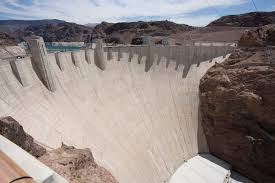
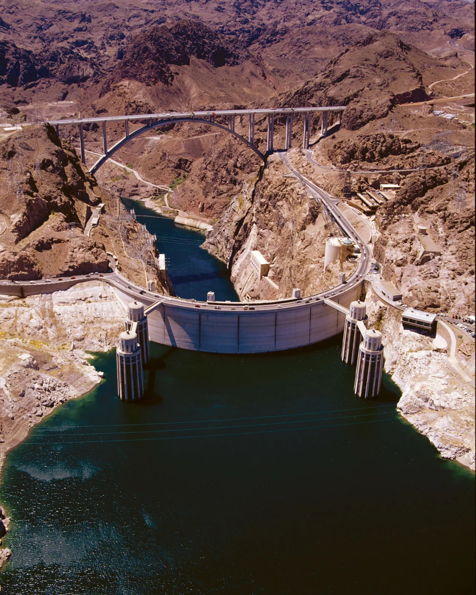
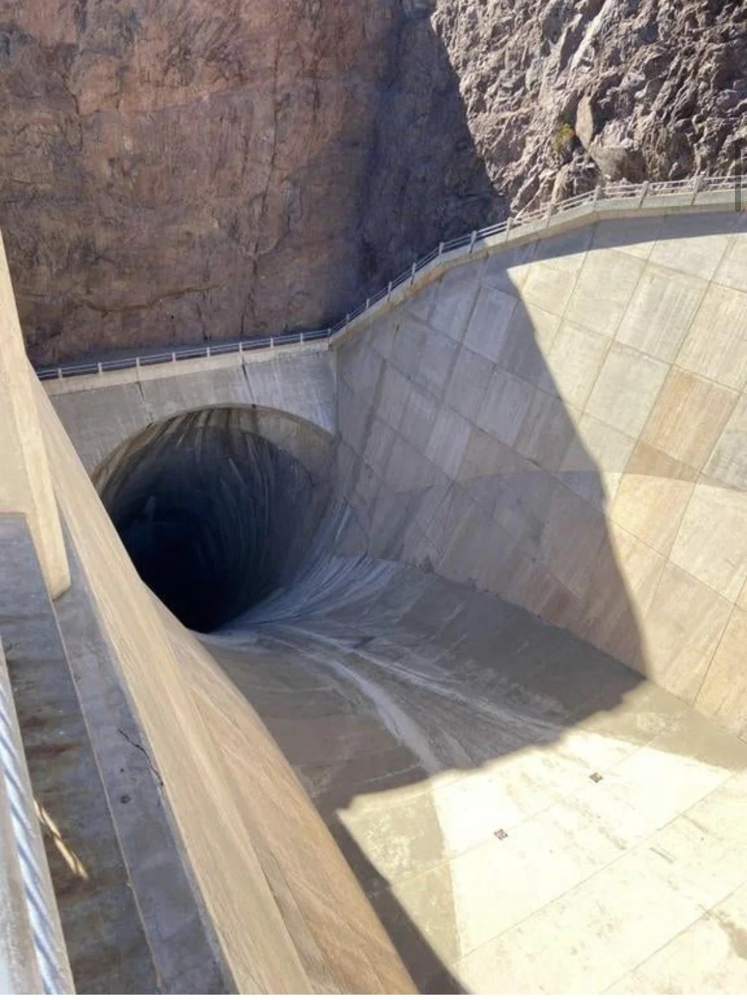
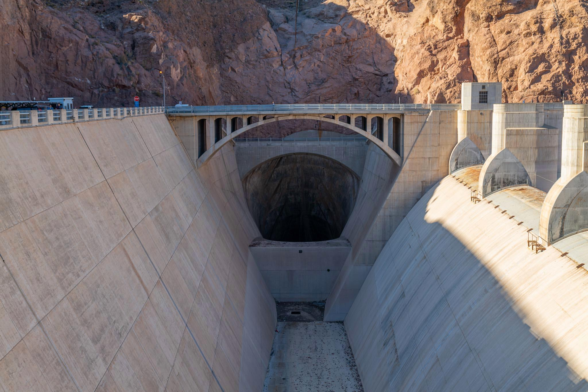
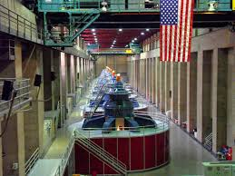
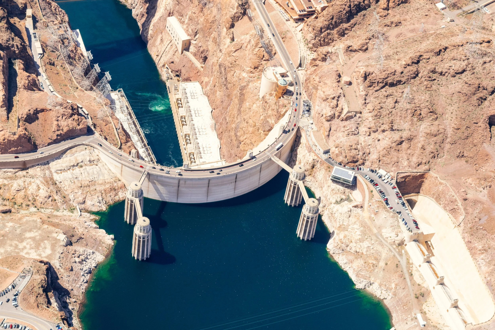

Explore dam structures through immersive 3D visualization. Understand engineering principles and learn interactively.
Start SimulationUnderstanding the purpose, structure, and importance of modern dam systems.
A dam is a massive engineered structure built across a river, stream, or valley to control and store water. It forms a reservoir that supplies water for irrigation, drinking, industries, hydroelectric power generation, and flood control.
Modern dams are designed using advanced civil and hydraulic engineering principles to withstand enormous water pressure, seismic forces, seepage, and environmental stress while ensuring long-term operational safety.
Dams also support renewable energy production, navigation, fisheries, tourism, recreation, and sustainable water resource management.
Stores freshwater for cities, industries, and agriculture.
Generates clean renewable electricity using turbines.
Reduces flood damage by regulating excess water flow.
Supplies water for farming and food production.
Maintains river depth for transport and navigation.
Supports tourism, fisheries, boating, and water sports.

The dam wall or body is the primary structural barrier designed to retain and control massive volumes of water. It is engineered to withstand enormous hydrostatic pressure, environmental forces, seismic activity, and long-term operational stress.
Depending on geological and project requirements, the structure may be constructed using reinforced concrete, earthfill, rockfill, or composite materials. Modern dam walls also integrate internal drainage systems, seepage control layers, and stability zones to ensure maximum safety and durability.
The reservoir is the large water storage area formed behind the dam, designed to collect and retain water for irrigation, drinking supply, hydroelectric power generation, industrial use, and environmental management.
It plays a critical role in regulating river flow, controlling floods, and ensuring water availability during dry seasons. Reservoirs are carefully engineered to manage varying water levels, sediment accumulation, and extreme storm inflows while maintaining long-term operational efficiency.


A spillway is a critical hydraulic structure designed to safely release excess water from the reservoir during heavy rainfall, floods, or emergency conditions. It prevents overtopping, which is one of the most dangerous causes of dam failure.
Spillways are engineered to handle massive discharge volumes while controlling water velocity, turbulence, and downstream erosion. Modern spillway systems may include gates, energy dissipation structures, and automated flow control mechanisms for efficient water management.
Dam gates are mechanical control structures used to regulate and manage the flow of water through spillways, outlets, and intake systems. They allow engineers to precisely control reservoir water levels, discharge rates, flood releases, and hydroelectric operations.
Modern gate systems are designed using high-strength steel and automated hydraulic mechanisms to ensure reliable operation under extreme water pressure. These gates play a vital role in flood management, emergency response, reservoir balancing, and overall dam safety.


The powerhouse is the energy generation facility of a hydroelectric dam where turbines and generators convert the kinetic energy of flowing water into electrical power. Water released from the reservoir passes through penstocks at high pressure, rotating turbines connected to generators.
Modern powerhouse systems are equipped with advanced control technology, transformers, cooling systems, and monitoring equipment to ensure efficient and continuous power generation. These facilities play a major role in producing clean, renewable electricity for cities, industries, and national power grids.
Abutments are the natural valley walls or terrain formations located on both sides of a dam that provide critical lateral support and structural stability. They help transfer enormous water pressure and structural loads safely into the surrounding rock or ground formation.
In arch dams, abutments are especially important because the curved structure redirects water forces directly into the valley sides. Engineers carefully analyze geological conditions, rock strength, slope stability, and seismic characteristics to ensure safe long-term performance.

Explore the core engineering principles, structural forces, materials, and safety considerations involved in modern dam design and construction.
Dam structures must resist enormous external and internal forces throughout their operational life. Engineers carefully analyze these loads to ensure long-term structural stability and safety.
Dam design requires advanced hydraulic, geotechnical, and structural engineering analysis to maintain performance, efficiency, and safety under extreme conditions.
Different construction materials are selected based on geological conditions, structural requirements, environmental exposure, and economic considerations.
Dam failures can occur due to structural, hydraulic, geological, or operational issues. Proper monitoring and maintenance are critical for prevention.
Dams must resist sliding, overturning, and settlement through proper foundation design and structural geometry.
Managing water flow, pressure, and energy dissipation to safely pass flood events without structural damage.
Preventing water infiltration through the dam body and foundation using cutoff walls, grouting methods, and drainage systems.
Strategic selection of materials including concrete, steel, and earthfill based on site-specific conditions and performance requirements.
Navigate around the dam using intuitive mouse controls. Zoom, pan, and rotate to inspect every angle.
Select any part of the dam to label it and access detailed engineering information.
Each component displays structural functions, design principles, and real-world applications.
Your labeled parts are saved locally, creating your personalized learning reference.
Launch the interactive 3D simulator and start your journey into dam engineering.
Launch SimulationLearn dam engineering concepts, hydraulic principles, structural behavior, and search predefined engineering queries interactively.
A spillway safely releases excess reservoir water during floods and prevents overtopping of the dam structure.
Uplift pressure is the upward seepage pressure acting beneath the dam foundation.
A hydroelectric dam generates electricity by converting the kinetic energy of flowing water into mechanical and electrical energy.
Water stored in the reservoir flows through penstocks at high pressure and rotates turbine blades connected to generators. The generators then convert mechanical rotation into electrical power for transmission to the power grid.
Search predefined engineering concepts and technical definitions.